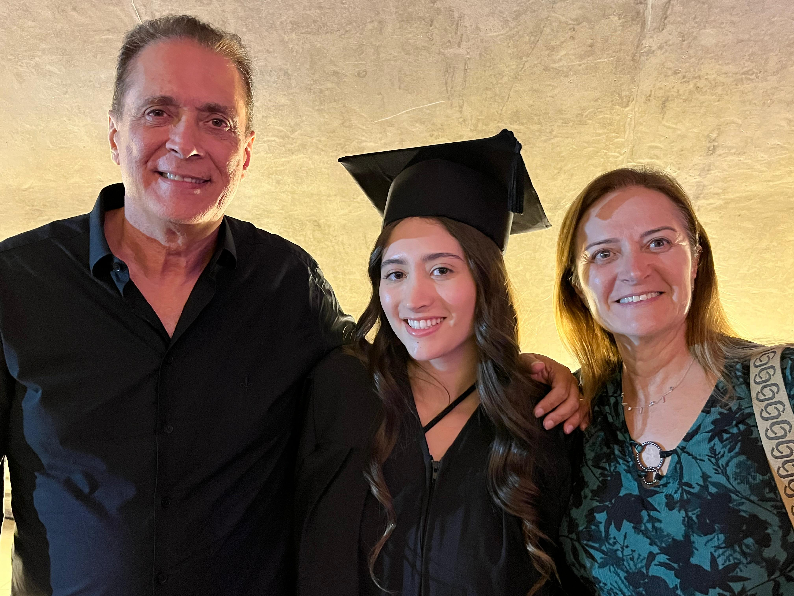
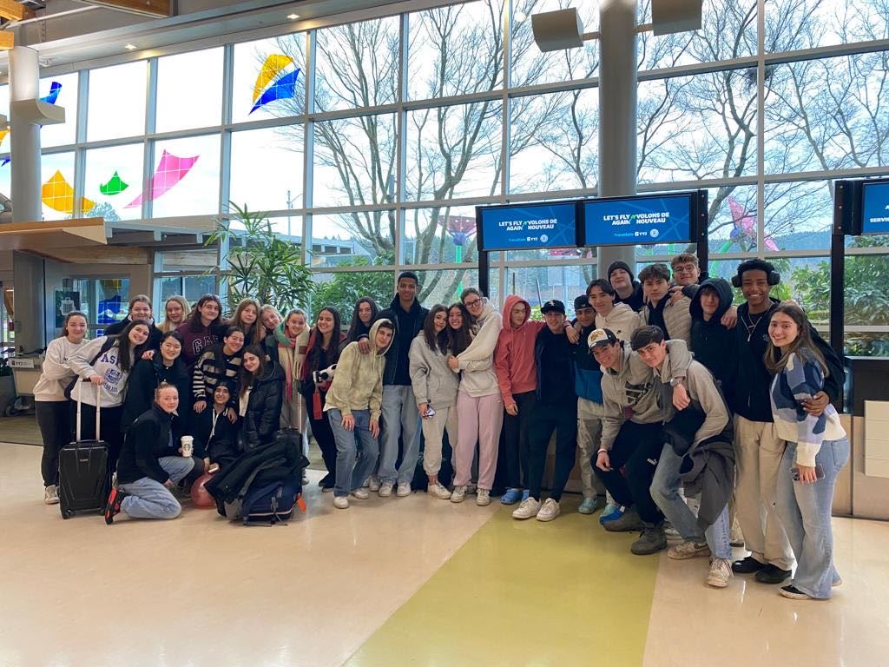
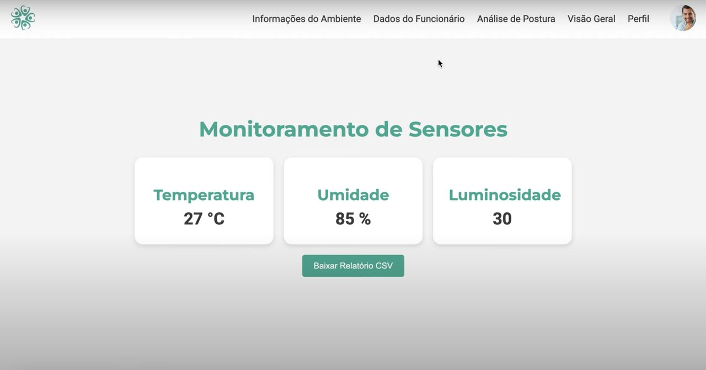
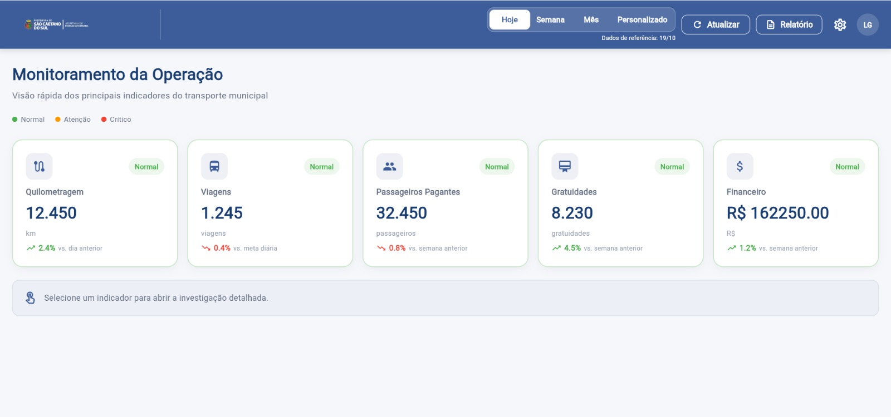
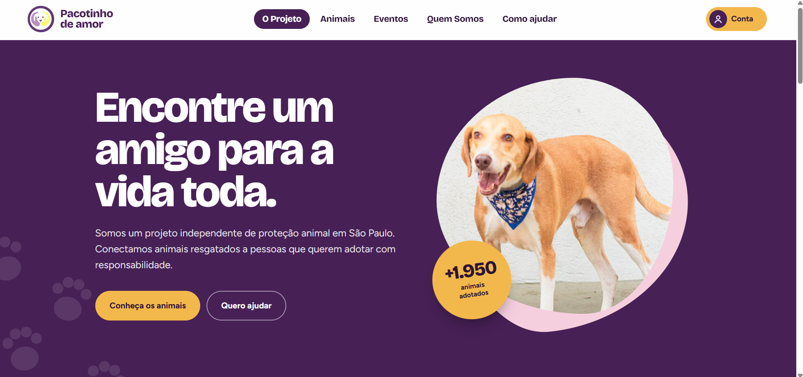
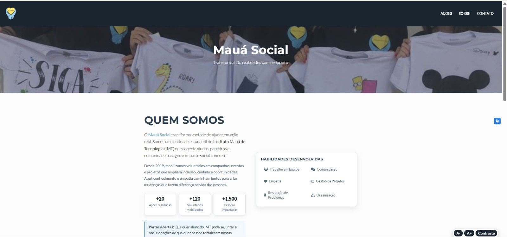
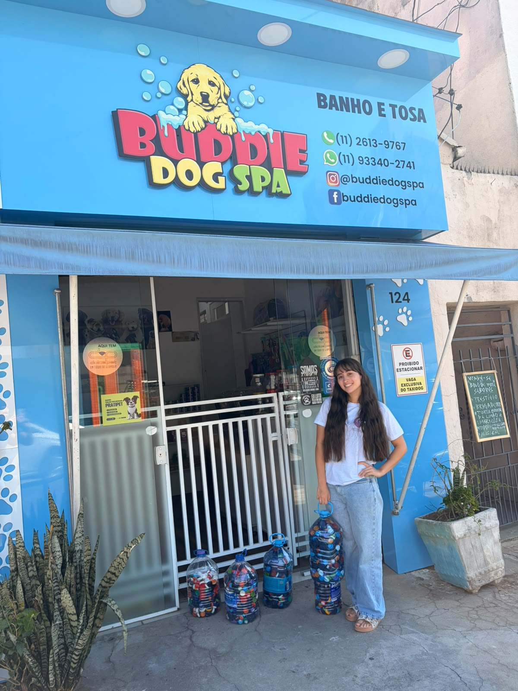

mai 2025 — mai 2026
Estagiária de Desenvolvimento de Software
Go2win
Automação de fluxos, interfaces mobile em React Native e integração com bancos SQL. Atuação desde o levantamento de requisitos até a prototipação no Figma.
São Paulo, Brasil · disponível para estágio
Dados, tecnologia
& experiências digitais
( 01 )
sobre mim
Estudante de Ciência da Computação no Instituto Mauá de Tecnologia e tecnóloga em Inteligência Artificial pela FIAP. Meu caminho combina desenvolvimento de software, automação de processos e projetos orientados a dados.
Busco oportunidades em Dados, Business Intelligence e Tecnologia — lugares onde uma boa pergunta pode se tornar uma experiência útil.
vamos conversar ↗trajetória
mai 2025 — mai 2026
Go2win
Automação de fluxos, interfaces mobile em React Native e integração com bancos SQL. Atuação desde o levantamento de requisitos até a prototipação no Figma.
2026 · 2 meses
Núcleo Abenge Estudantil
Atuação na diretoria de apoio à inovação, colaborando com as iniciativas da entidade estudantil.
atual
Mauá Social
Membro da entidade estudantil. Por iniciativa própria, desenvolvi a interface do site institucional para apoiar a divulgação de ações e doações.
formação
Instituto Mauá de Tecnologia · em andamento
Conclusão prevista: dez 2028

formação
FIAP · concluído em 2024
ML · Redes Neurais · Data Science

vivência
Intercâmbio de um ano
Inglês C1 · Espanhol em formação
seleção de trabalhos

FIAP Next 2024 · Challenge CiX · em equipe
Solução apresentada no FIAP Next 2024 para produtividade e bem-estar no ambiente corporativo, com dados centralizados em um dashboard acessível.

em andamento · Instituto Mauá · parceria pública
Dashboard em desenvolvimento para acompanhar indicadores operacionais e apoiar a tomada de decisão no transporte público de São Caetano do Sul.
projeto acadêmico · em equipe
Sistema com Arduino e sensor ultrassônico que monitora e informa o nível de água em tempo real.

projeto acadêmico · fase final
Plataforma de adoção responsável de animais. O front-end está disponível para demonstração; o banco de dados já foi criado, mas ainda não está hospedado nem conectado à versão publicada.
ver demonstração ↗
iniciativa voluntária · Mauá Social
Desenvolvimento da interface para apoiar a divulgação de ações, campanhas e doações da entidade estudantil.

além da tecnologia
Também contribuo como voluntária do Pacotinho de Amor nas feiras de adoção, ajudando os animais a encontrarem uma família e registrando fotos para a divulgação.
Nos momentos livres, gosto de montar quebra-cabeças e criar peças de cerâmica fria — atividades que exercitam paciência, atenção aos detalhes e criatividade.
( 04 )
caixa de ferramentas
SQL
Power BI
Python
Data Science
Machine Learning
AWS
React Native
Flutter & Dart
MySQL · MongoDB
Docker
Git & GitHub
Power Automate
Lecom (BPM)
Figma
Scrum · Kanban
Prototipação
certificações
Fundação Bradesco · 5 h · 2026
FIAP · 2024
IBM SkillsBuild · 2025
SCRUMstudy
PMI